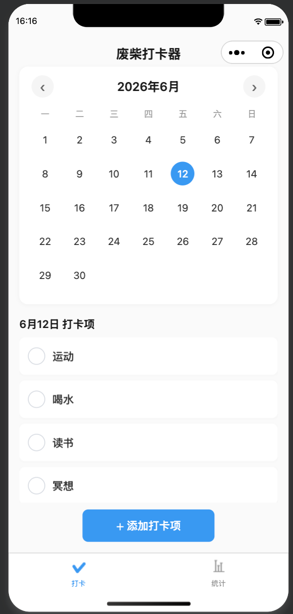
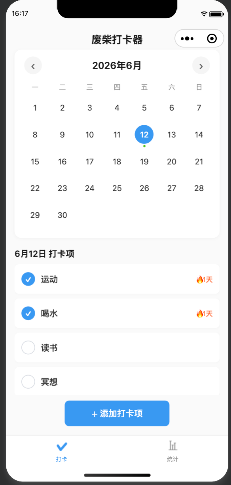
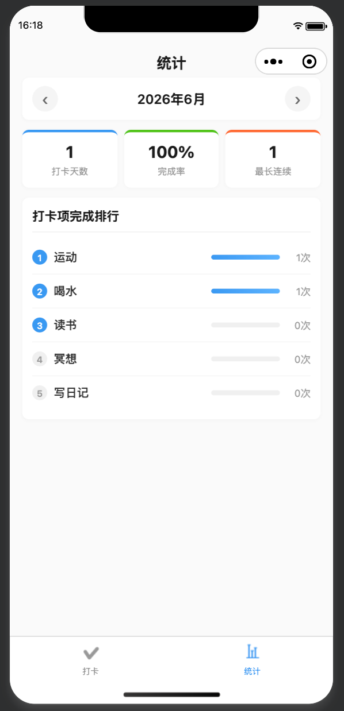

废柴打卡器 Waste Punk Check-in
"打开 → 点一下 → 关掉" —— 全程不超过 3 秒的极简打卡工具。 去社交、去等级、去社区，只保留日历打卡和月度统计。 轻松调侃的产品调性，帮助用户无负担地养成习惯。
01 问题与洞察
市面上的习惯追踪类应用功能越来越臃肿——专注森林、社交广场、等级系统、社区动态…… 对于只想"每天打个卡就走"的用户来说，这种复杂度反而成为负担。
具体场景包括但不限于：
- 记录每日排便情况，配合益生菌/饮食调整追踪改善效果
- 记录奶茶摄入频次，辅助逐步减量（一天一杯 → 两天一杯）
- 记录喝水、运动、读书、冥想等日常习惯的完成情况
"废柴"不是自嘲，而是接纳。 不做强迫式的习惯养成，而是提供一个 轻松、无压力的记录工具。核心交互路径只有两步：打开日历 → 点击打卡项。 可在任一日期前置/追溯打卡，月底自动生成统计报表。
02 核心功能
月历概览
打开即见本月打卡概览，带标记圆点的日期一目了然
一键打卡
点击日期查看当日打卡项列表，点击复选框切换完成状态
自定义打卡项
自由添加/删除打卡项，如"排便""戒奶茶""喝水""运动"
连续天数激励
每个打卡项显示连续打卡天数 🔥，正向激励持续坚持
月度统计
打卡天数、完成率、最长连续天数，三大核心指标一目了然
完成排行
各打卡项完成次数排行，了解哪些坚持得好、哪些需要加强
03 设计系统
产品调性：轻松、调侃、去负担。保留 🔥 等表情符号，拒绝过度设计。
04 架构设计亮点
📦 模块化存储层
设计了一个深度模块 Storage 层（utils/storage.js），封装所有本地存储操作，
对外暴露统一 API 接口。接口固定后，V2 切换到云存储时只需替换该模块内部实现，
页面代码无需改动。
🗄️ 数据存储策略
- 两把锁：
checkinItems（打卡项列表）和checkinRecords（打卡记录） - 记录格式：
{"YYYY-MM-DD": [{name: "运动", checked: true}, ...]} - 不上云、不涉及用户身份标识、不需要登录
- 满足微信小程序上架合规要求，内置隐私政策页面
05 产品截图



06 技术栈
07 PRD 文档
完整的 PRD 包含 14 条用户故事、详细的数据模型定义（情侣打卡/单人模式的差异化设计）、存储层模块接口规范、页面路由与交互流程、合规事项（隐私政策）、V2 云存储规划及详细的测试策略。